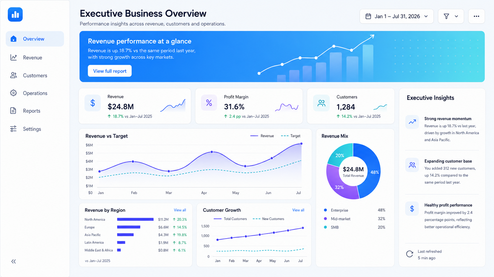

Your financial, sales, and operational data live in different places, making it hard to see the full picture
BUSINESS CLARITY FOR GROWING COMPANIES
See clearly.
Decide
confidently.
We bring your financial and operational data together in one clear view, so you can understand what is driving performance, spot problems earlier, and make better decisions
QuickBooksAccounting
Housecall ProField operations
GustoPayroll & HR
BuildertrendProject management
ExcelOperational files

Data refreshed
Decision ready
Built for growing businesses that have outgrown spreadsheets and disconnected reporting.
Does this sound familiar?
Your data is there. The clarity isn’t.
When reporting takes more work than it should, the issue is rarely the data, it’s how the information is connected and brought together.
Fix my reporting gapBy the time the numbers are ready, the opportunity to act may already have passed.
Too much time is spent exporting, reconciling, and recreating reports that should already be available.
Your reports show the result, but not always the operational drivers behind it.
What we build
One connected view of your business.
We bring your most important financial and operational information together, define the KPIs that matter, and turn it into reporting that helps you quickly see what is working, what isn't, and where attention is needed.
A glimpse of clarity
Dashboards built around the questions that matter.
Fewer reports. Clearer insight into performance and priorities.
Know exactly how the business is performing
Spend less time building reports
Spot problemsand opportunities sooner
Know whatis driving the numbers
Demos
See what better visibility can look like.
Explore dashboard concepts designed around real business questions, from financial performance and profitability to operations, sales and workforce performance.
How we work
One clear path from question to action.
No black box. Every engagement is structured around the decisions your team needs to make.
Start a conversation-
01
Discover
We start with the business questions you need answered and the decisions the reporting should help you make.
-
02
Connect
We identify the relevant systems and bring the information together into a reliable reporting foundation.
-
03
Design
We define the right KPIs and build a simple, intuitive view of your business.
-
04
Deliver
We launch the solution, make sure your team knows how to use it, and establish the process for keeping it useful.
Margin alert
Needs attention
Gross margin
4.2 pts
vs target
Recent margin trend
Target
Primary drivers
- Overtime
- Material cost
- Average job value
Recommended focus
Review Northeast operations
Why 4Sight
01
02
03
Built for decisions, not display.
Every metric, interaction and visual has one job: help someone understand faster and act with confidence.
Business-first
We start with the business question, not the chart.
Finance + Operations
We connect financial outcomes to the operational activity driving them.
Clarity by design
Simple enough to understand quickly. Detailed enough to investigate when needed.
Client perspective
Clarity teams can feel.
Before we begin
Good questions, clear answers.
A short call is usually the fastest way to know if we can help.
Ask us anythingWhat kinds of businesses do you work with?
We support growing businesses that need clarity to make better decisions by leveraging their business data. Examples of such industries include service-based businesses, logistics and transportation, hospitality, construction, etc.
Can you work with the systems we already use?
Yes. We can work with data from accounting platforms, CRMs, spreadsheets, payroll, scheduling, operational systems, databases and other tools your business already relies on.
Is this just dashboard design?
No. The dashboard is the final layer. We help determine what should be measured, bring the relevant data together, define the KPIs, automate the reporting where appropriate, and build a system your team can actually use.
How long does a typical project take?
Focused dashboards typically range from 2 – 4 weeks depending on complexity and scale. Larger reporting transformations take longer. After discovery, you receive a clear scope, timeline and delivery plan.
Book a discovery call
Ready to see your business more clearly?
Schedule a discovery call to discuss your reporting needs, current challenges and the best way forward.
Discovery call
Schedule a discovery call
Choose a time that works for you.
Prefer to call?
+1 281-944-5756